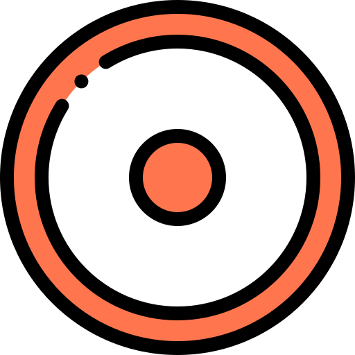
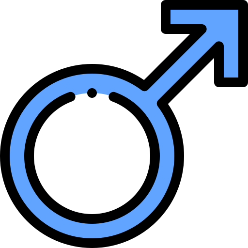
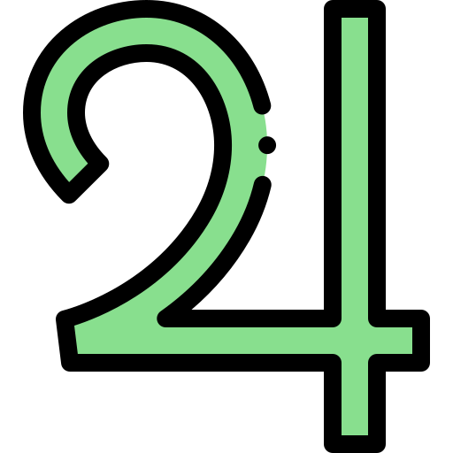
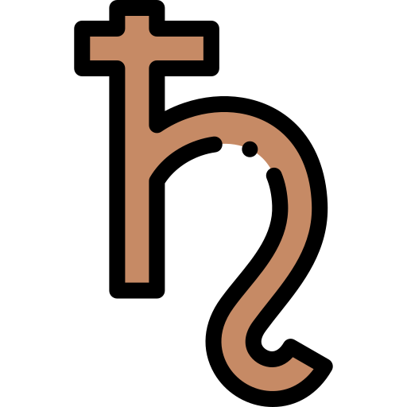
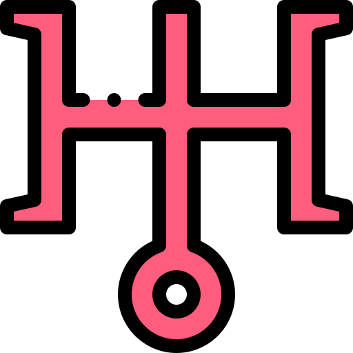
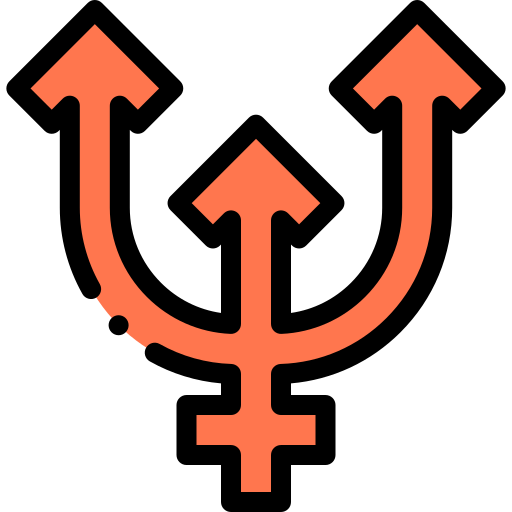

PLANETAS Y ASCENDENTE

SOL : sNuestro signo solar indicará el aspecto más concientizado en nuestra vida, nuestra energía vital, aquella forma de la personalidad que nos hace brillar e irradiar lo más sincero
de nuestro ser. Es el Astro Rey y en una carta nos muestra nuestros talentos, nuestra esencia, es el símbolo de masculinidad. Nos habla de nuestra dignidad, nuestro orgullo. Habla de nuestra creatividad. Es el planeta que habla de los gobernadores,
de las figuras centrales. Sostiene, domina, gobierna, ejecuta y eleva.
LUNA : Habla de nuestra madre. Saber en qué signo está la luna nos dice mucho sobre nuestro primer vínculo afectivo y deja grabado nuestras reacciones instintivas. Es el lugar donde buscamos refugio cuando nos sentimos
inseguros. El signo donde se encuentre es de la manera en que buscamos ese refugio. Se refiere a todo lo doméstico, familiar. Es nuestra mente inconsciente. Habla de sentimientos, humor. La Luna percibe, imagina, nutre, absorve y por sobretodo
siente.
Este mecanismo lunar es algo que debemos transformar y trascender a lo largo de nuestro paso por la vida.
MERCURIO : Es el planeta que gobierna nuestros pensamientos. Es la mente consciente y objetiva. Nos muestra nuestra capacidad de aprendizaje. Es la razón , el análisis. Mercurio
habla, viaja, vende, distribuye y se expresa..
VENUS : Es el planeta que nos dice como nos complementamos. Es el gusto, la actitud de respuesta en el amor. La seducción. Es lo social, la armonía. Venus ama, entretiene , seduce,
complementa, armoniza.

MARTE: Es el planeta de la acción y expresión sexual masculina Es el deseo, la iniciativa , el emprender, es el coraje y la lucha. Disputa, provoca, debate, avanza, rompe, irrita.

JÚPITER: Es el planeta de la expansión y sentido de la vida,de los viajes internos y externos. Expande nuestra conciencia, agranda todo lo que toca para bien o para mal. Es la oportunidad,
el premio, la alegría. Inspira y aconseja.

SATURNO: Ortodoxia.Es el planeta de la estructura,disciplina,control,seriedad,esfuerzo y de los límites. Nos habla de la tradición y la autoridad. Es la madurez y estabilidad.Limita,
frena y demora.

URANO: Gobierna los cambios,la libertad y la independencia. Puede ser imprevisible,rebelde y es innovador. Despierta , sorprende, interrumpe, altera, se rebela.

NEPTUNO: Es el planeta de la espiritualidad. De nuestra conexión con el amor universal y la memoria colectiva. Es la compasión, la empatia, la sensibilidad, la imaginación. También
es la confusión y la evasión en sus distintas formas. Es intuición, idealismo, psiquismo pero también si es una vibración baja puede traernos distorsión, cosas no claras y engaños.
 PLUTÓN:
PLUTÓN: Gobierna las profundidades psíquicas. Es el Poder , La transformación, la muerte, la obsesión. Transforma, atrapa, explora, reforma.
ASCENDENTE: La constelación que ascendía en el horizonte a la hora exacta en que nacimos es la que se toma como el signo Ascendente. Por ese motivo es tan importante saber la
hora exacta de nacimiento.Es una energía que tenemos desde que nacemos, pero que al principio no podemos reconocerla ya que al no ser un planeta,su energia en dificil de asimilar pero ésta nos tiñe toda la carta natal.El Ascendente se muestra
por todas las áreas de experiencia y por nuestros vínculos porque es de esa energía que tenemos que aprender.Hasta que no la reconozcamos en nosotros la vamos a ver afuera,en los otros.Esta energia se ira incorporando a lo largo de la vida,
pero en especial muy marcadamente en el primer retorno de Saturno que se da a los 28-29 años de vida.
En caso de que lo neguemos, la vida pedirá incorporarlo de formas un poco más bruscas, a través de crisis de identidad.
 CÁNCER: Impresionabilidad-Emotividad-Captación-Maternidad-Intimidad-Susceptibilidad.
CÁNCER: Impresionabilidad-Emotividad-Captación-Maternidad-Intimidad-Susceptibilidad.